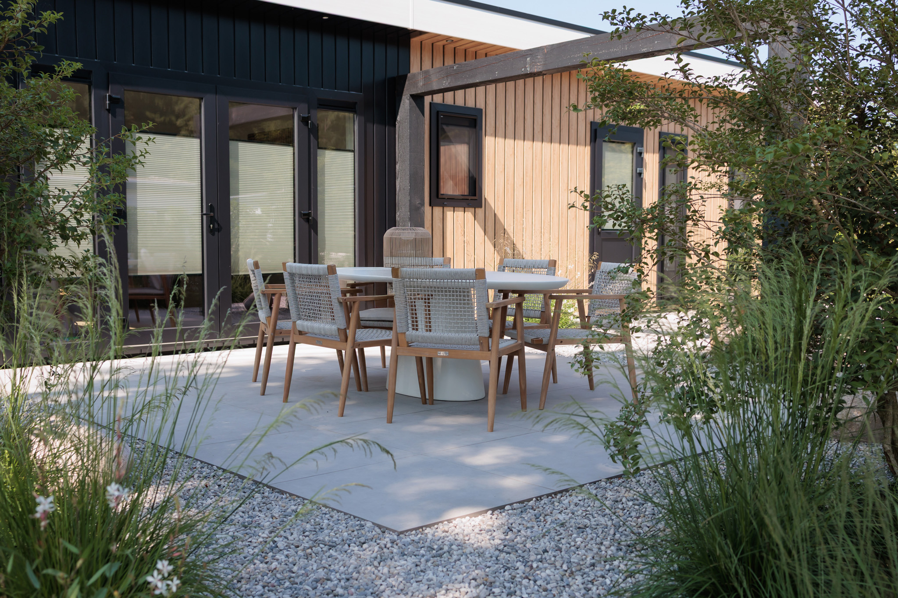
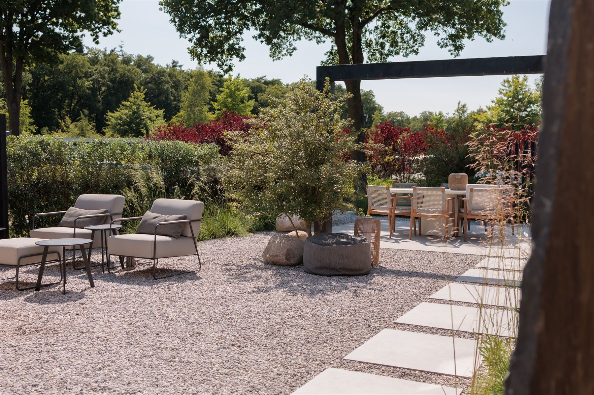
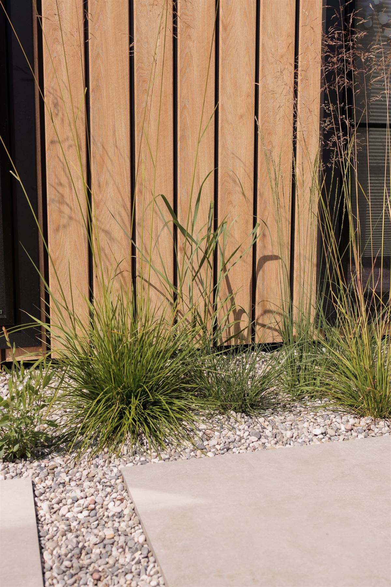
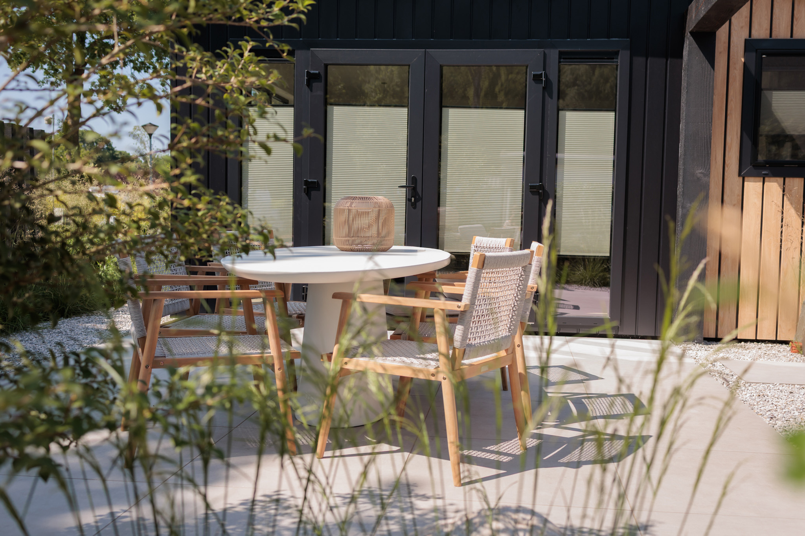
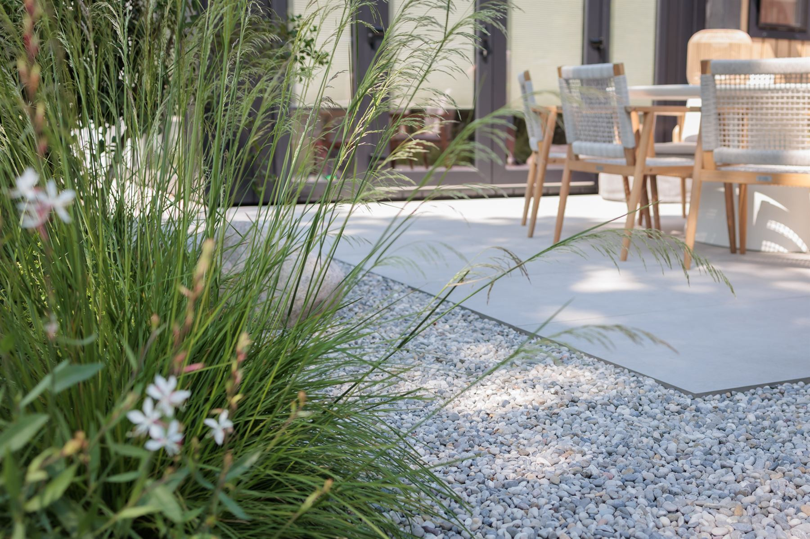
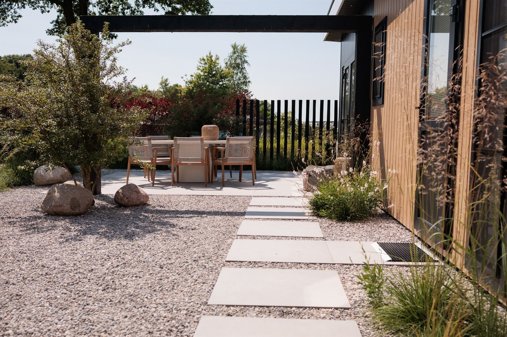
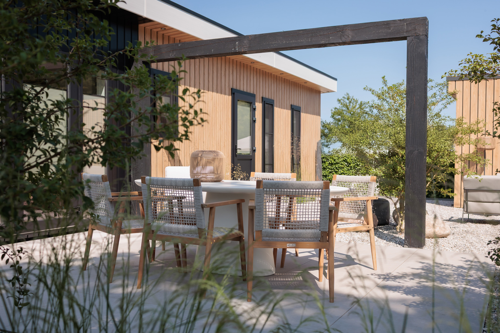
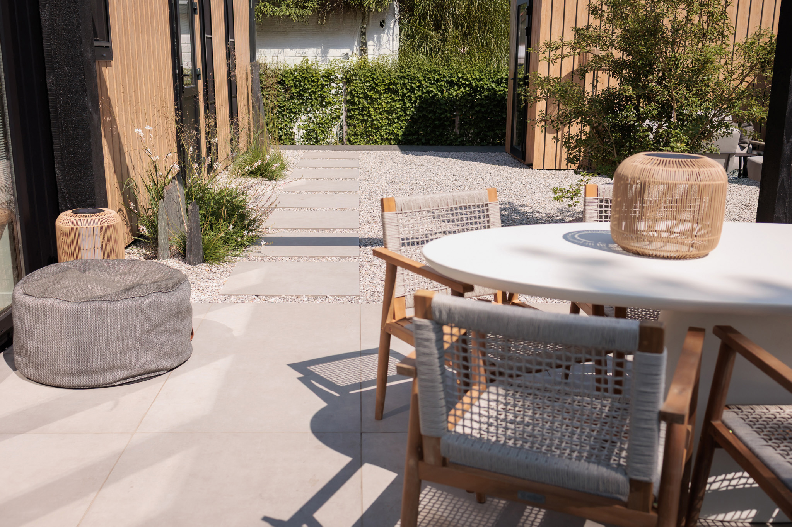

In beeld
Beelden van dit project












Deze prachtige tuin was een feestje om te ontwerpen. De combinatie van lichte kleuren en veel planten geven deze tuin een luxe en relaxte uitstraling. Meerdere zitgedeeltes zorgen ervoor dat er altijd een fijne plek is om te zitten.







